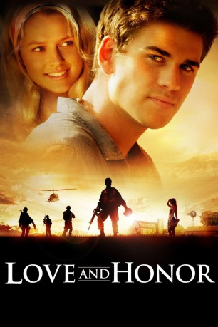

#5948 Love and Honor - Liebe ist unbesiegbar
Alternativ: Love and Honor
 
 IMDB-Wertung: 5.7 / 10
IMDB-Wertung: 5.7 / 10  Metascore: 0
Metascore: 0 
Der junge Soldat dient seinem Land im Vietnam-Krieg ohne genau zu wissen, warum er das tut. Er hinterfragt seine Taten nicht und führt einfach nur seine Befehle aus. Als sein bester Freund, der auch in der Army dient, von seiner Freundin in der Heimat verlassen wird, entschließen sich die beiden Soldaten zurück in die USA zu fliegen, um die Liebe zu retten. Die beiden gehen davon aus, dass ihre Abwesenheit von Niemandem in Vietnam bemerkt wird. Diese Reise wird Mickeys Leben grundlegend verändern. Der Grund dafür ist vor allem das Mädchen Candace, das Mickey in Michigan kennenlernt. Sie ist in einer Anti-Kriegsbewegung aktiv und bringt den jungen Soldaten dazu, denn Sinn des Kriegs zu hinterfragen. Mickey ist fasziniert von der jungen Frau und verliebt sich in sie. Nun steht er vor der Entscheidung: Krieg oder Liebe?
Jahr: 2013
Dauer: 95 Minuten
FSK: 12
Land: USA Studio: IFC FilmsTonspuren: DTS - ,
Untertitel: Deutsch,
Auflösung: 1080p (1920x816) Größe: 4853 MB
Genre: Drama, Krieg, Liebe
Regisseur: Danny Mooney
Drehbuch: Nikole Beckwith
Soundtrack:
Darsteller:
 Liam Hemsworth als Mickey Wright
Liam Hemsworth als Mickey Wright Austin Stowell als Dalton Joiner
Austin Stowell als Dalton Joiner Teresa Palmer als Candace
Teresa Palmer als Candace- Aimee Teegarden als Juniper / Jane
 Chris Lowell als Peter
Chris Lowell als Peter Wyatt Russell als Topher
Wyatt Russell als Topher Max Adler als Burns
Max Adler als Burns- Delvon Roe als Isaac
- Chris Newman als LT. Johnson
 Gordon Michaels als Capt. Sinclair
Gordon Michaels als Capt. Sinclair- Julian Gant als Franklin
- Claire Richards als Joy the Stewardess
- Lauren Mae Shafer als Meredith
 Charlotte Ubben als Coed
Charlotte Ubben als Coed Ricky Wayne als Officer Whiteside
Ricky Wayne als Officer Whiteside- Cindy Chu als Waitress
- Christine Bell als Hippie , uncredited
 Robert Forte Shannon III als Hippie , uncredited
Robert Forte Shannon III als Hippie , uncredited- Patrick Potochick als Riot Officer , uncredited
- DaJuan Rippy als Extra , uncredited
- Michael Ellison als Ray
- Chase Maser als Sanchez
- Roger Callard als County Sheriff
- Apollo Bacala als Hong Kong Terminal Passenger , uncredited
- Randal Bruce als Airline Passenger , uncredited
- Madison Conradis als Hippie , uncredited
- Elise Edson als Hula Hoop Girl , uncredited
- Tiffani Elise Edwards als Airport Traveler , uncredited
- Andrew Freij als Riot Starter , uncredited
- Wole Ikeji als Rioter , uncredited
- Jason Jamal als Squad Soldier , uncredited
- Tim Jenkins als Hippie Protester , uncredited
- Greg Prusiewicz als Extra , uncredited
- Nicholas Ritz als Airport Traveler , uncredited
- Stephanie Schaberg als Hippie Protester , uncredited
- Morris Lee Sullivan als Business Traveler at Hong Kong Airport , uncredited
- Melody Teodoro-Kurtis als Hong Kong Terminal Passenger , uncredited
Datei: X:\2013(I-M)\Love and Honor - Liebe ist unbesiegbar (2013, FSK12, 1920x816).mkv seit 08.04.2017
Festplatte: HD 2013(I-Z)-2014(A-Z)
 Es gibt insgesamt 89 Filme in der Gruppe '2013(I-M)'
Es gibt insgesamt 89 Filme in der Gruppe '2013(I-M)'